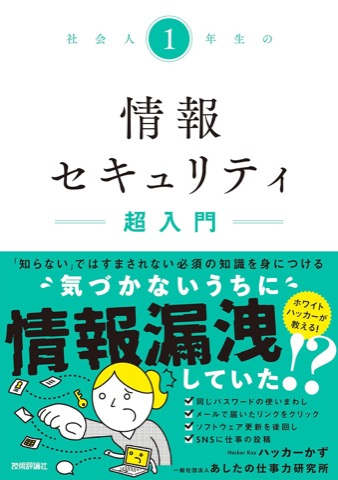

宛先の取り違え・アドレスの打ち間違い・BCC忘れを、送信する前にお知らせ。いつもと違うときだけ警告し、ふだんの送信は一切邪魔しません。
こんな経験、ありませんか
「全員に返信」に、社外の人まで入っていた
気づいたのは、相手からの返信で。宛先の予測候補で、1つ下の別人を選んでいた
同じ苗字の、別の会社の方に。BCCのつもりが、全員のアドレスが丸見えに
一斉送信のたびに、ヒヤッとする。誤送信は、うっかり者だけのミスではありません。そして送信ボタンを押した後では、取り消せないことがほとんどです。誤送信ガードは、その「一通」を送信の前に止めます。
考え方
毎回出る警告は、3日で景色になります。読まれない確認は、肝心の一通も素通しさせてしまう。誤送信ガードは逆の設計です。警告が出るのは、本当に危ないときだけ。だから出たときは、手が止まります。
いつもの相手へのメールは何も出ません。送信後に右下へ宛先が小さく表示されるだけです（上の「ふだんは、これだけ」の画面）。
初めての宛先・そっくりなアドレス・BCC忘れなど7つの危険を見つけたときだけ、送信を一時停止して確認を求めます。
一度確認した相手には二度と聞きません。数日で、警告はほとんど出なくなります。
機能
Gmailの誤送信対策として、宛先確認・BCCチェックなど7種類の検知を自動で行います。キーボードで送信する派の方（Ctrl+Enter）もすり抜けません。各機能はワンタップでオン/オフできます。
宛先欄に社外のアドレスがたくさん並んだ一斉送信を、アドレス丸見えの事故になる前にストップ。
佐藤さんのつもりで斉藤さんに——ふだんの送信相手の傾向から、取り違えの可能性を見つけます。
A社宛のメールに、B社の担当者が紛れていないか。初めての組み合わせのときに確認します。
「gmial.com」のような、1〜2文字だけ違うそっくりアドレスをその場で指摘します。
宛先の予測候補の選び間違いに、送信前のその場で気づけます。
本文は「佐藤様」なのに、宛先に佐藤さんがいない。旧字体（斉/斎/齋）やローマ字アドレスにも対応。
同じ件名のやり取りに、これまでいなかった宛先が急に加わったときに確認します。
安全性
「安全です」と言うだけでなく、誰でも確かめられる形で公開しています。
判定条件の全仕様・プライバシーの取り扱い・ソースコードをすべて公開しています。導入判断にそのままお使いください。
技術情報: Manifest V3／権限は storage のみ／注入コード約113KB・依存ライブラリなし／常駐プロセスなし
開発者
『社会人1年生の情報セキュリティ超入門』（技術評論社）著者。YouTube「ハッカーかずの部屋」やテレビ・ラジオ・講演などで、セキュリティをやさしく解説しています。
メール誤送信の相談を受けるたびに「送る前に、機械が気づくべきだ」と考え、自分が毎日使うために作りました。セキュリティ教育活動の一環として、無料で公開しています。

著書を見る導入方法
Chromeウェブストア（Googleが運営する公式の配布サイト）が開きます。
確認画面で追加ボタンを押せばインストール完了です。登録や支払いはありません。
設定は不要です。Gmailのタブを開き直せば、その送信から守り始めます。
FAQ
解決しない疑問や不具合のご報告は、お問い合わせフォームからお気軽にどうぞ。開発者が直接読んでいます。
宛先の学習は、入れた日から始まります。今日入れれば、今日の送信から。次の一通が事故になる前に。
公開したばかりの新しい拡張機能で、レビューはまだ集まっていません。だからこそ判定の仕組みもプログラムの中身もすべて公開し、宣伝ではなく中身で判断していただける状態にしています。
Chrome に追加（無料）